메뉴¶
‘메뉴’란, 다음과 같이 메인화면 좌측 상단 ‘IRIS BigData Platform’ 버튼을 클릭했을때 보이는 항목들을 의미합니다.
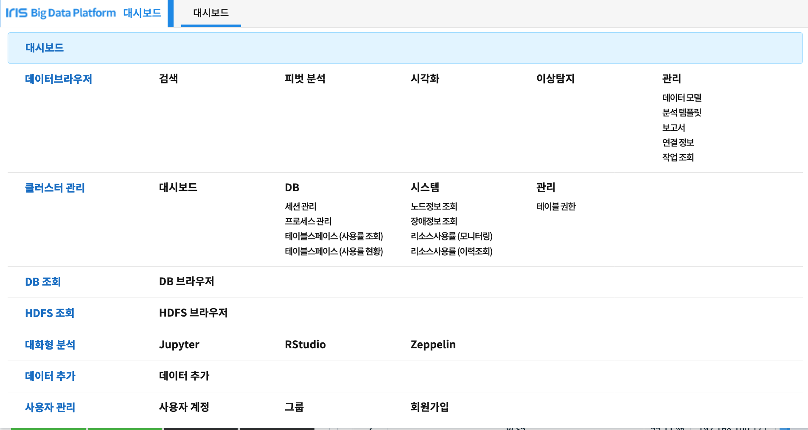홈 화면 우측 상단의 ‘Menu’ 버튼을 클릭해 메뉴 생성, 삭제 및 위치 변경 등이 가능합니다.
메뉴를 조작하기위해 ‘Menu’ 버튼을 클릭해 다음 화면으로 진입합니다.

메뉴 목록¶
| 컬럼 | 설명 |
| 이름 | 메뉴의 이름을 표시합니다 |
| 표시 | 해당 메뉴를 목록에서 보여줄지 말지 여부를 표시합니다 |
| 순서 | ‘위로’, ‘아래로’ 버튼을 눌러 메뉴의 순서를 조정합니다 |
| 서비스 유형 | 해당 메뉴의 서비스 유형을 의미합니다. 추후에 더 자세히 다룹니다 |
| 첫 화면 | IRIS-WEB 접속시 가장 처음으로 보여줄 화면을 결정합니다 |
| 편집 | 해당 메뉴에 대한 상세 설정을 편집할 수 있습니다 |
| 접근 권한 | 해당 메뉴에 대한 접근 권한을 편집할 수 있습니다 |
메뉴 추가¶
우측 상단의 ‘메뉴 추가’ 버튼을 클릭하면 다음과 같이 메뉴를 추가할 수 있는 화면이 생성됩니다.
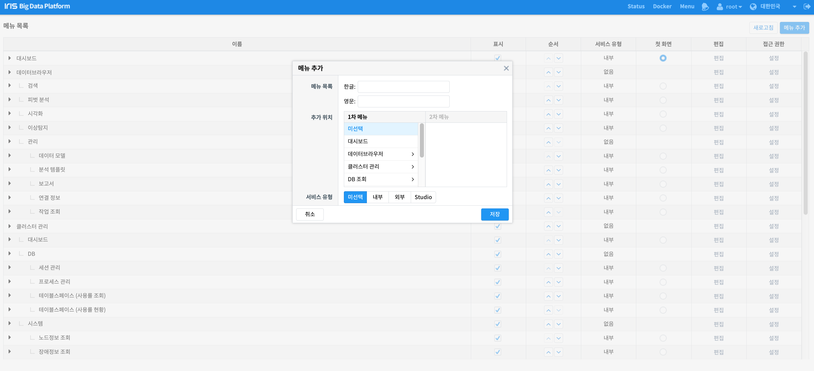| 항목 | 설명 |
| 메뉴 목록 | 추가할 메뉴의 한글 및 영문 이름을 설정하는 항목입니다. |
| 추가 위치 | 추가할 메뉴의 위치를 설정하는 항목입니다. |
| 서비스 유형 | 메뉴 클릭시 어떤 페이지를 보여줄것인지 설정하는 항목입니다. |
이제, 메뉴를 생성하기위해 필요한 항목들을 작성합니다.
메뉴를 생성하기위해서는 ‘메뉴 목록’, ‘추가 위치’, ‘서비스 유형’을 설정해야합니다.
한 단계씩 알아보겠습니다.
메뉴 목록¶
메뉴의 한글 및 영문 이름을 작성합니다. 한글 이름은 ‘테스트메뉴’, 영문 이름은 ‘TESTMENU’로 작성해보겠습니다.
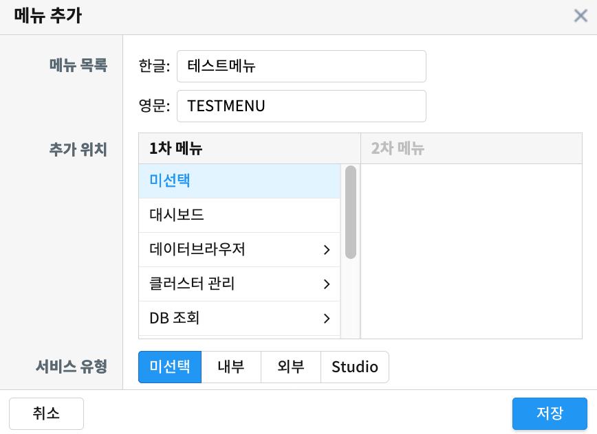추가 위치¶
메뉴 추가 위치를 결정합니다. 1차 메뉴를 ‘데이터브라우저’, 2차 메뉴를 ‘시각화’로 선택해보겠습니다.
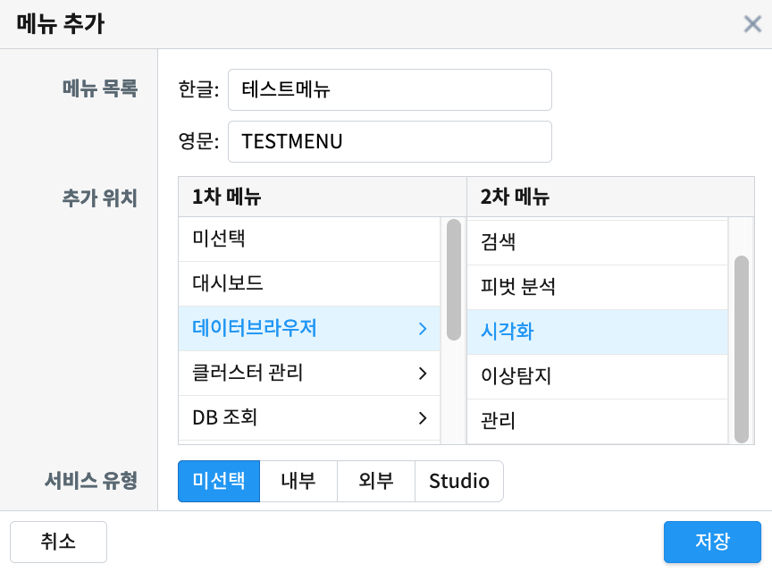| 항목 | 설명 |
| 1차 메뉴 | 새롭게 추가될 메뉴를 어떤 메뉴의 하위 메뉴로 설정할지 결정합니다. 미선택시 최상위 수준의 메뉴로 생성됩니다. |
| 2차 메뉴 | 1차 메뉴 선택시 활성화 됩니다. 1차 메뉴의 하위 메뉴를 의미하며, 선택시 해당 하위 메뉴의 하위 메뉴로 설정됩니다. 미선택시 1차 메뉴의 하위 메뉴로 생성됩니다. |
추가 위치에 대한 이해를 돕기위해 서비스 유형 설명으로 넘어가기 전에 이 상태로 우선 생성해보겠습니다.
메뉴는 다음과 같은 위치에 생성됩니다.
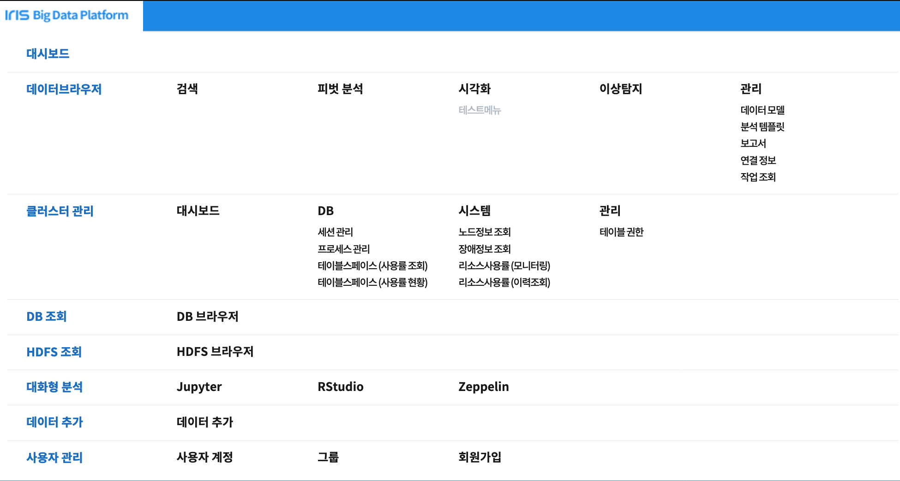메뉴 목록에서도 확인 가능합니다.
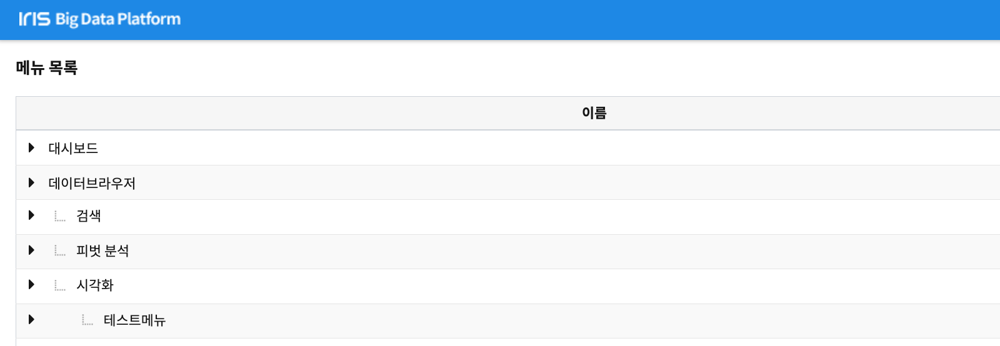서비스 유형¶
| 항목 | 설명 |
| 미선택 | 새롭게 생성할 메뉴를 비활성화 상태로 추가합니다. 메뉴 목록에 추가는 되지만 실제 내용이 없기떄문에 메뉴로 진입할수는 없습니다. |
| 내부 | 새롭게 생성할 메뉴를 IRIS-WEB 내부에서 사용하는 기존 페이지와 동일한 형태로 생성하고자 하는 경우 해당 옵션을 사용합니다. |
| 외부 | 새롭게 생성할 메뉴를 IRIS-WEB 외부에서 사용하는 기존 페이지와 동일한 형태로 생성하고자 하는 경우 해당 옵션을 사용합니다. |
| Studio | 새롭게 생성할 메뉴를 IRIS-WEB에서 생성한 특정 보고서와 동일한 형태로 생성하고자 하는 경우 해당 옵션을 사용합니다. |
서비스 유형은 ‘미선택’, ‘내부’, ‘외부’, ‘studio’ 총 네 가지가 있습니다.
하나씩 알아보겠습니다.
미선택¶
미선택으로 설정시, 앞선 예제처럼 메뉴가 활성화되지 않은 상태로 생성됩니다.
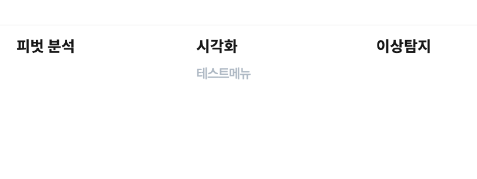내부¶
내부로 설정시, 새롭게 만들 메뉴를 기존 페이지 중 어떤 페이지와 동일한 형태로 생성할지 결정합니다.
예를들어, 다음과 같이 ‘서비스’를 ‘데이터브라우저’, ‘페이지’를 ‘이상탐지’로 설정해보겠습니다.
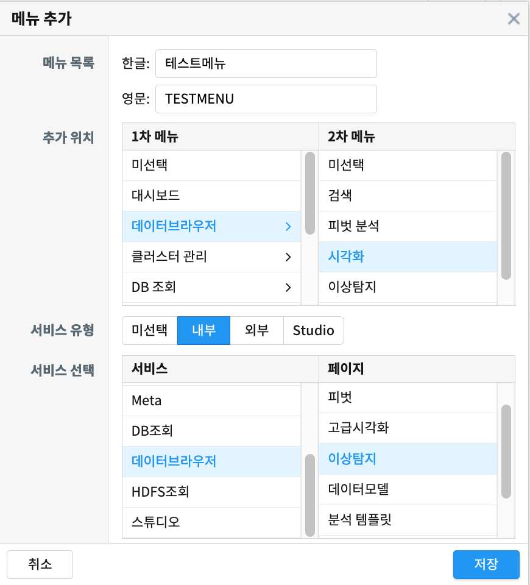이대로 생성하면 미선택일때와는 다르게 메뉴가 활성화된 것을 확인할 수 있습니다.
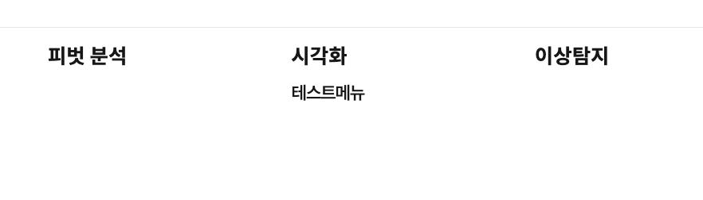페이지를 클릭하면 다음과 같이 ‘데이터브라우저’의 ‘이상탐지’와 동일한 화면으로 생성된 것을 확인할 수 있습니다.
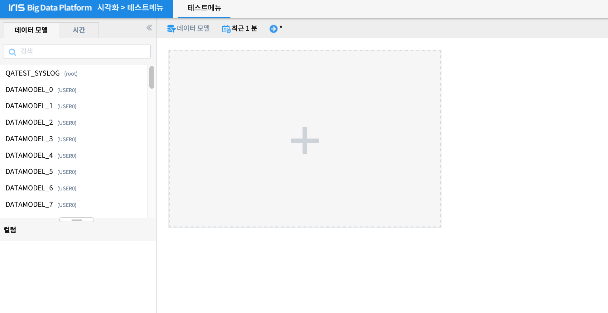외부¶
외부로 설정시, 새롭게 만들 메뉴를 외부 페이지 중 어떤 페이지와 동일한 형태로 생성할지 결정합니다.
예를들어, 다음과 같이 서비스 URL에 http://monaco.mobigen.com 을 설정해 보겠습니다.

해당 메뉴로 이동시, 다음과 같이 메뉴 생성시 설정한 URL로 이동하는것을 확인할 수 있습니다.
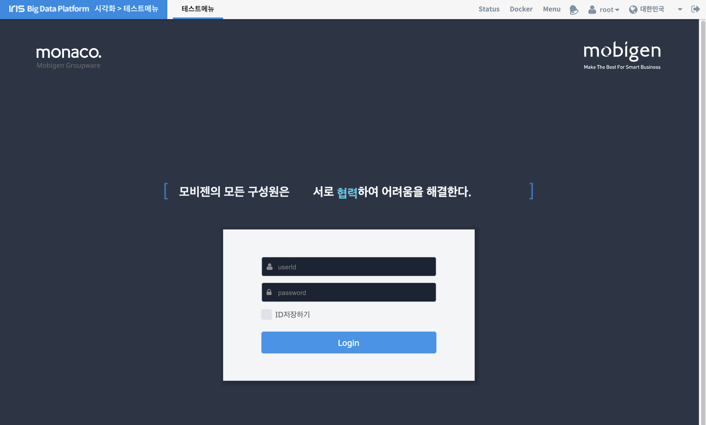Studio¶
Studio로 설정시, 새롭게 만들 메뉴를 기존에 생성해놓은 보고서로 설정할 수 있습니다.
따라서 해당 설정을 사용하려면 사전에 미리 생성해놓은 보고서가 있어야합니다.
다음과 같이 아무런 목록도 보이지 않을 경우, 보고서를 생성해주어야합니다.
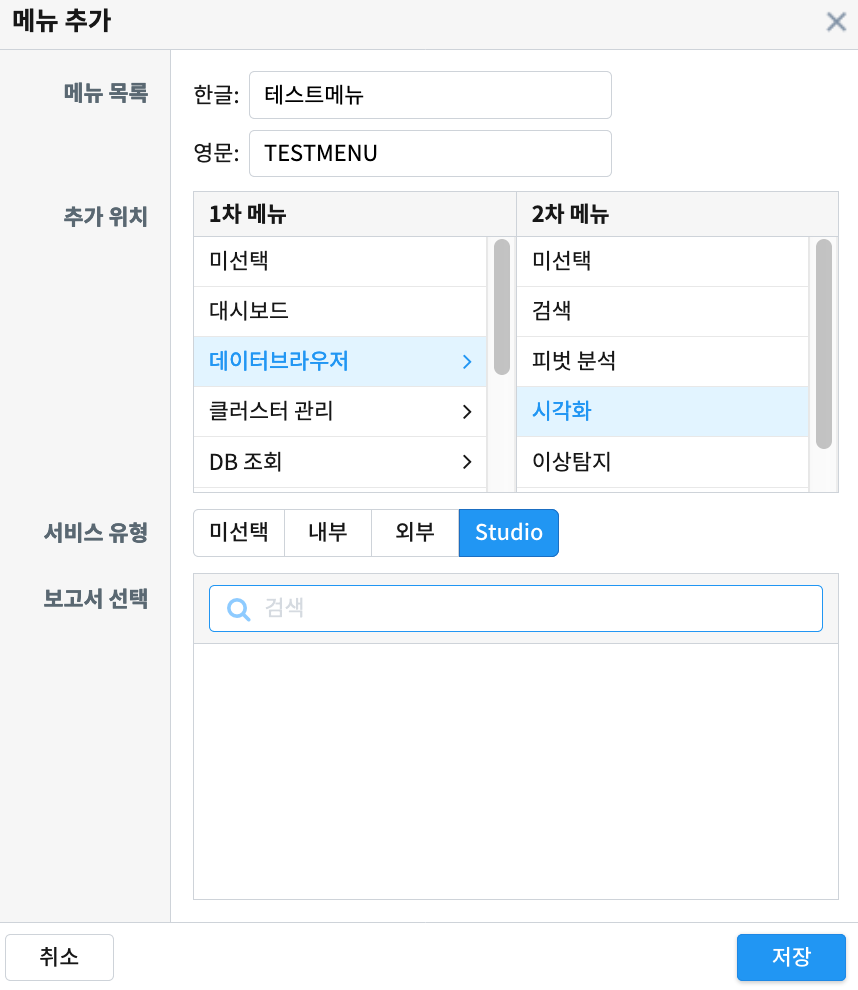다음과 같이 ‘TEST_REPORT’라는 이름의 빈 보고서를 생성해보겠습니다.
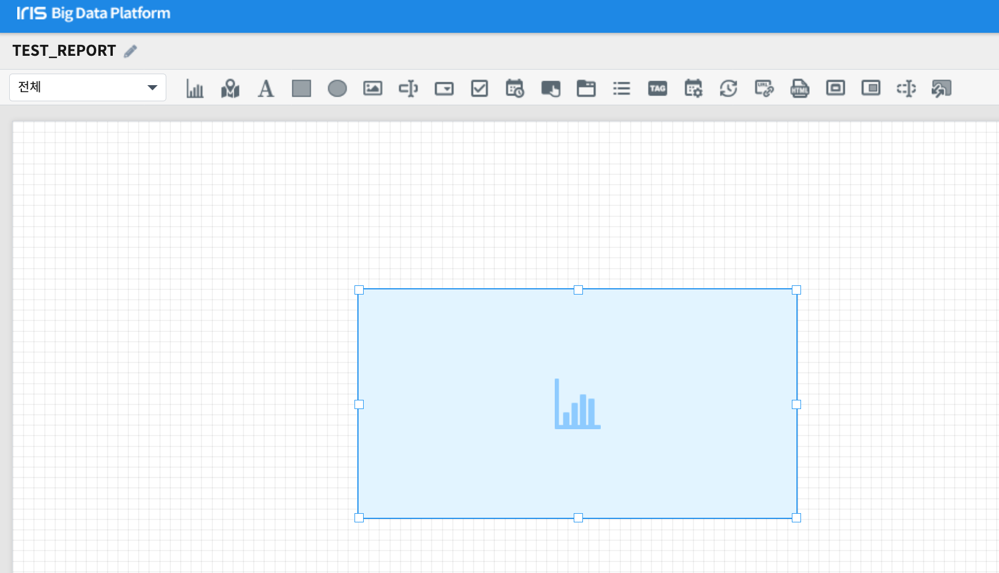보고서 생성 후 다시 확인해보면 다음과 같이 생성한 보고서가 목록에 추가된것을 확인할 수 있습니다.
저장버튼을 누르고 생성된 메뉴를 클릭하면 다음과 같이 보고서 화면으로 이동하는 것을 확인할 수 있습니다.
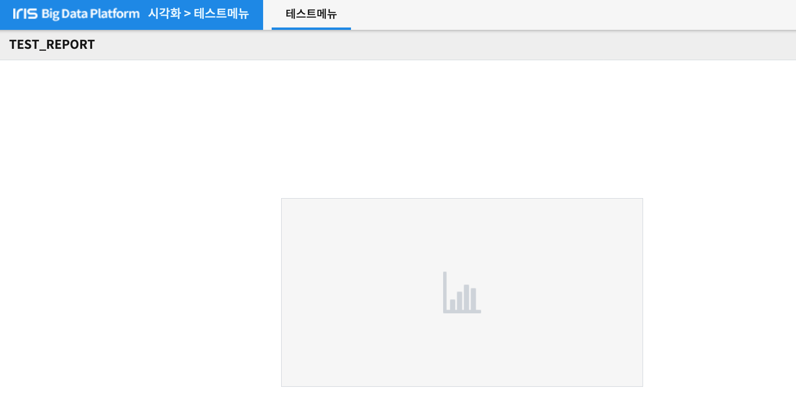메뉴 편집¶
메뉴 목록의 ‘편집’ 컬럼을 클릭하면 하위 메뉴로 ‘수정’, ‘삭제’ 항목을 확인할 수 있습니다.
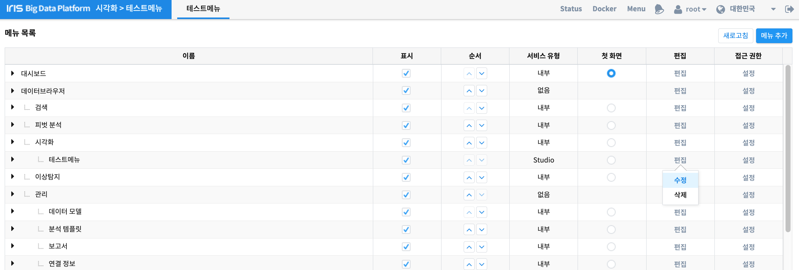‘수정’ 버튼을 클릭하면 다음과 같이 메뉴를 생성했을때와 동일한 화면이 생성됩니다.
좌측 상단의 텍스트가 ‘메뉴 추가’에서 ‘메뉴 생성’으로 변경된 것을 확인할 수 있습니다.
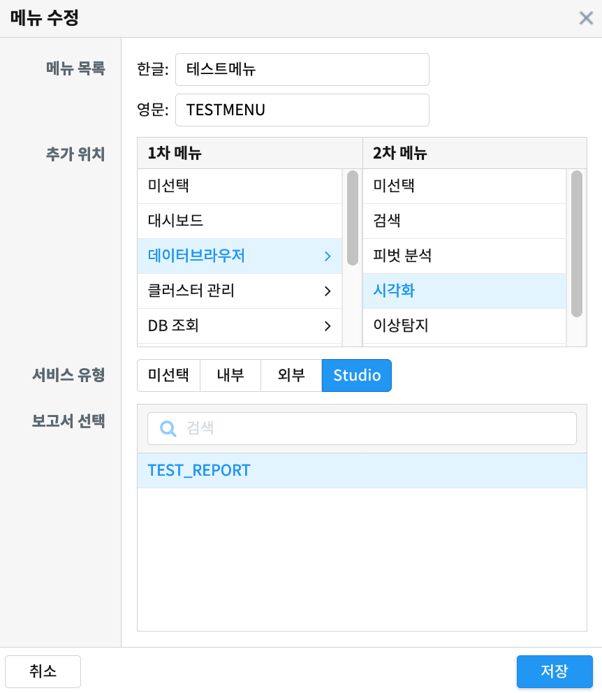메뉴를 생성했을때와 동일한 방식으로, 원하는 형태로 메뉴를 수정 후 저장하면 됩니다.
메뉴 삭제¶
생성되어있는 메뉴를 삭제하는 기능입니다.
메뉴 편집시에 클릭했던 ‘편집’ 컬럼을 클릭 후, ‘삭제’ 버튼을 클릭하면 다음과 같이 확인창이 생성됩니다.
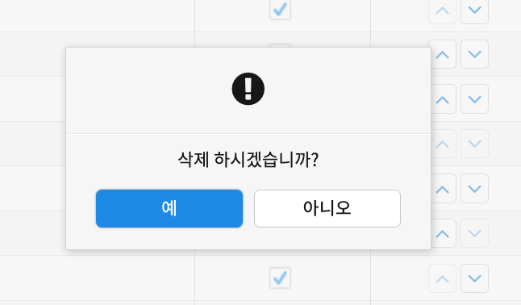‘예’ 버튼을 클릭하면 해당 메뉴가 삭제된 것을 확인할 수 있습니다.